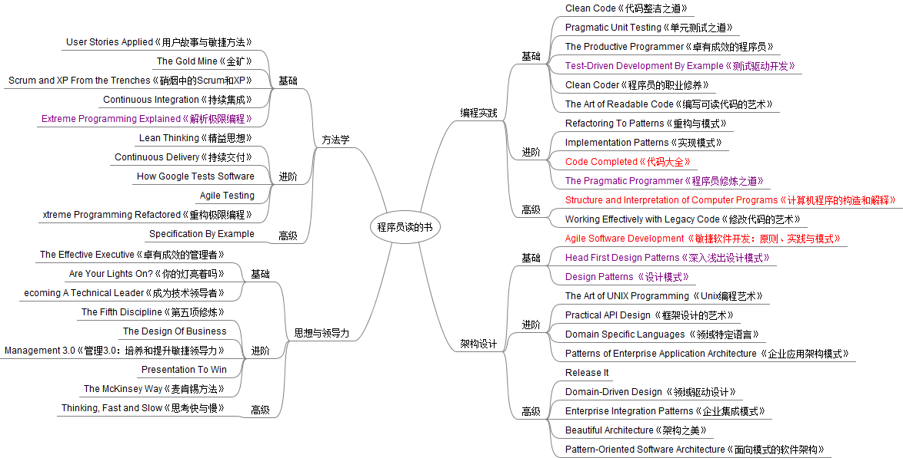

忘记是哪里看到的这份书单了，那时就用思维导图记录了下来，以后相继看了编程实践下的几本书，感觉作者推荐和分类的相当好。编程实践的下书我没有全部阅读过，每个阶段阅读了那么一两本书，在这里简单介绍下那些我阅读过的书。
《编写可读代码的艺术》
这是一本适合刚开始自己的编程生涯的人阅读的书，书的中心内容就是教我们编写出可读性高、整洁、优美的代码，提高代码质量，并把编写更容易理解的代码变成一种习惯。当然，也不是说有经验的程序员就不用看这本书了。我阅读这本书的时候已经不是新手了，不过依然可以从书中学到很多。对于有经验的程序员，很容易忽视一些问题，也更容易养成一些恶习。
《测试驱动开发》
一本很薄的书，如果没有其他干扰，集中注意力的话，一天读完不是问题。书中介绍的形式很特别，作者让我们跟随他，一步一步的去进行测试优先的开发，之后作者还为我们展示了如何使用测试优先的方法一步一步的开发一个类似JUnit的Python单元测试框架。不懂Python语言也没问题，里面的代码很简单，看完后自己的Python入门了。本书还有一个重点，就是作者的任务列表，我现在也在使用这种方法，能在任务中断后继续时帮我快速了解之前所完成的以及接下来需要做的，不至于还要花时间去思考之前做了什么。
《代码大全》
这本书的厚度完全可以和大全两个字联想起来，内容丰富，质量也高，可问题是要看完这么厚的一本书确实难了的。不过还好，作者给出了每个章节适合的人群，根据自己的情况和需要，可以选择性阅读，如果时间多，读读这本也是个好选择。
《程序员修炼之道》
强烈推荐的好书，主要是本人从这本书中受益匪浅。这本书的英文名意思是高效的程序员，所以全书都在讲如何提高自己的效率，从各种习惯到工具再到团队合作，方方面面提高自己的效率。如书的副标题–从小工到专家，等你看完这书，按照书中的方法去实践时，专家可能还远，但是绝对不会再是菜鸟。不管是学生还是富有经验的发开人员都可以去阅读，就算读过一遍，再去随手翻翻也能带来一些感悟。
《计算机程序的构造和解释》
上述的书都是在讲述如何成为好程序员，如何写出好的代码，如何提高自己效率，但这本书就是教我们理解计算机语言和程序本身。这本书曾经是MIT的入门级教材，所以更偏重理论。也许我们学习了不止一门计算机语言，也许我们被那些不同语言的不同特性吸引着或是困恼着，也许我们还只是浅浅的理解了编译器、解析器之类的概念，那么这本书完全可以帮我们换个角度看到编程和语言。它会让我们学到函数式编程、虚拟机、解析器、编译器等等，如果觉得这些太高深了，那么它同样也在讲解语言的组成、基本表达式以及其组合、抽象等等。这本书很适合有一定编程经验的人阅读，可以结合自己的经验学习书中的知识。当然新手也完全可以学习，最大的好处是建立了一套知识体系，对以后学习编程语言和相关内容时候变得更简单高效。不过话说后面，这本书不好消化，看起来费时费脑力。
未提到的书籍
这些书都是具有代表意义的，还有许多经典的书籍值得程序员去阅读。
《编译原理》 （龙书）这类书籍太过高深了，除非向编程语言更深入的发展或是工作领域需要，否则没必要去阅读。
《编程珠玑》 个人感觉值得一读，书中好多都在提如很灵机一动的想出一个好的算法，里面的算法很值得学习，我也在实践中使用过一些。
《算法导论》 里面的算法的确不是一个普通程序员很好理解的，阅读这本书需要高等数据知识，我读了第一章递归求时间复杂度后就放弃了这本书。
《编码：隐匿在计算机软硬件背后的语言》 这本书从小学生之间使用手电筒光来聊天开始，讲到了继电器，使用继电器实现数学逻辑中的各种门，然后利用这些做一个继电器实现的加减法电路，然后…这本书可以让我们明白计算机工作原理，即使没了计算机，我们也可以自己做一台可编程的机械出来。我觉得给我儿子当计算机入门教材不错。
最后说的是自己的提升还是靠自己的努力，书籍只是起引导作用。而且并不是这么多书都要去看，找适合自己的。